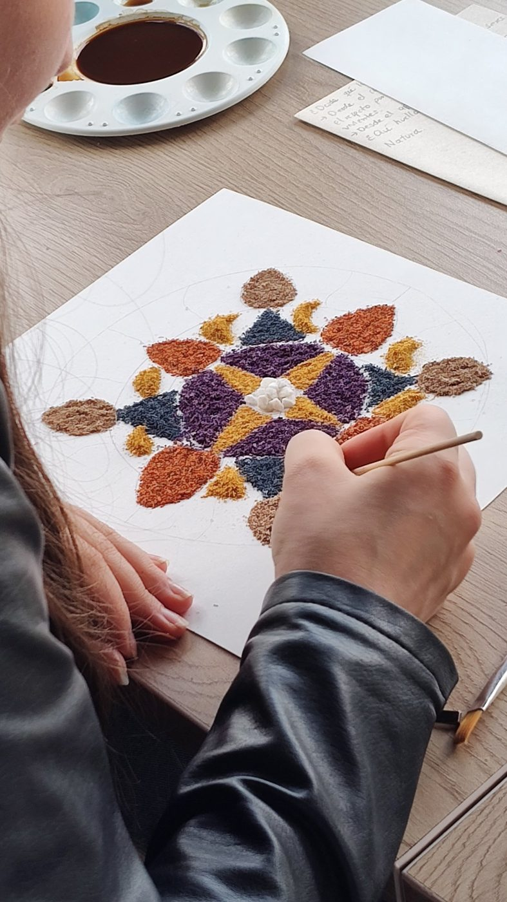
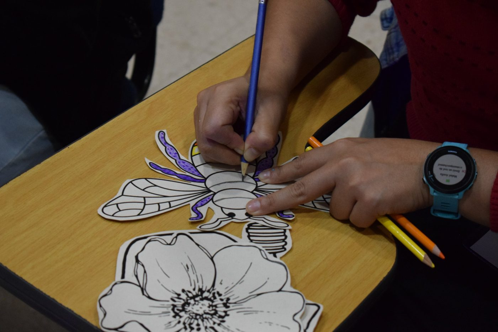
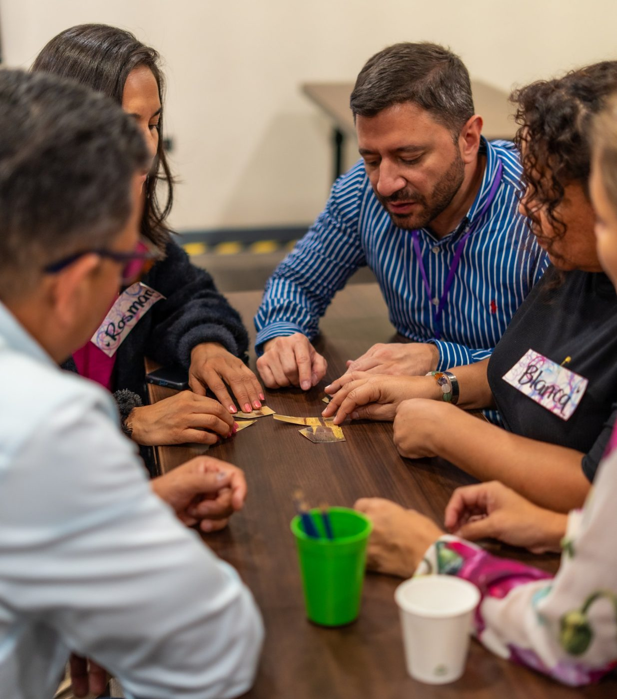
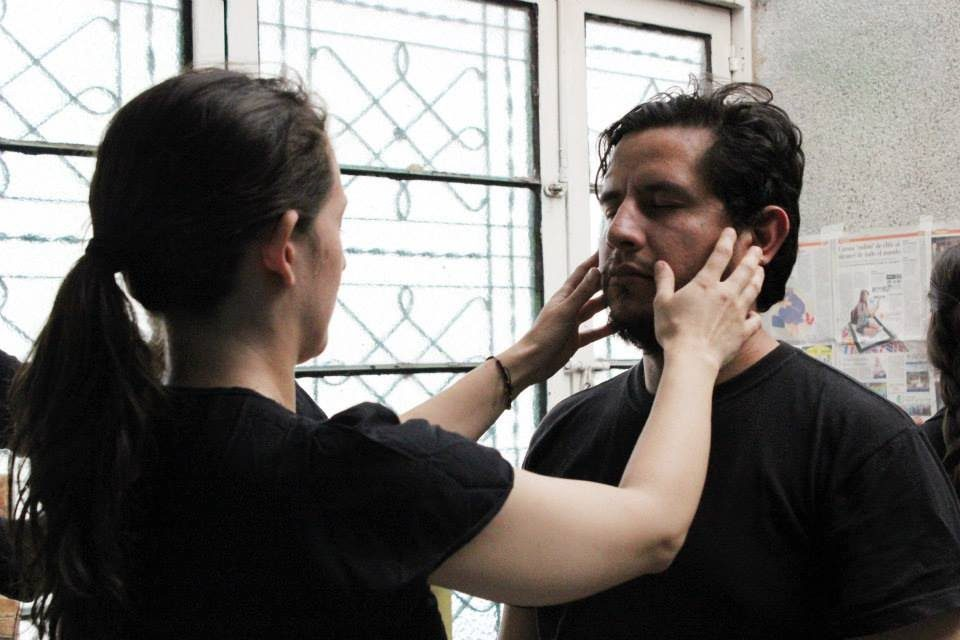

Bienestar laboral y clima organizacional · Colombia y Latinoamérica
Programas de bienestar laboral para que tu gente no llegue al agotamiento.
“Mi gente está agotada.”
El cansancio no avisa: se acumula en silencio y un día aparece como incapacidades, conflictos y renuncias. Te acompañamos a revisar la cultura, diseñar un plan de bienestar que cumpla la ley y llevar a tu gente experiencias con arte y naturaleza que de verdad le devuelven la energía.

Lo que vemos en las empresas
Un plan de bienestar no es un calendario de celebraciones.
- El desgaste se acumula en silencio y aparece tarde: como ausentismo, incapacidades, conflictos y rotación.
- La empresa declara unos valores, pero en el día a día la gente actúa distinto y nadie ve con claridad qué está pasando.
- La batería de riesgo psicosocial sale alta y el plan de bienestar sigue siendo el mismo listado de actividades del año pasado.
- Actividades que entretienen pero no cambian nada, porque no responden a lo que cada área realmente necesita.
Una ruta, no un listado
Primero la raíz, después las ramas.
Ningún programa de bienestar florece en una cultura que desgasta. Por eso empezamos por mirar la organización y, desde ahí, diseñamos lo que tu gente necesita.
- Paso 1 · Si la cultura pesa
Mapa de Navegación
Consultoría en clima y cultura para que las áreas dejen de chocar y los valores se vean en conductas.
- Paso 2 · Si la cultura ya está clara
Plan de Bienestar Laboral
Diseñamos contigo un plan perfilado por áreas, medible y alineado con la ley.
- Paso 3 · Para la gente
Programas y experiencias
Equilibrio Total, la Escuela de Ecología Emocional, el Espacio El Refugio y nuestro portafolio de bienestar.
| Formato | Para qué | Duración | Grupo |
|---|---|---|---|
| Mapa de Navegación | Clima y cultura organizacional | 4 meses | Dirección, líderes y equipos |
| Plan de Bienestar Laboral | Diseñar el plan con diagnóstico real | A la medida de tu empresa | Gestión Humana y SST |
| Equilibrio Total | Prevenir el agotamiento laboral | 6 meses, un encuentro al mes | Equipos con alto desgaste |
| Escuela de Ecología Emocional | Gestión emocional | 12 sesiones de 2 horas | Desde 12 personas |
| Espacio El Refugio | Aprender a manejar el estrés | Sesiones de 1 hora | 6 a 18 personas |
Paso 2 · Diseño a la medida
Plan de Bienestar Laboral
Un plan estratégico, medible y adaptable, perfilado para cada área de tu empresa.
- Parte de
- Un diagnóstico real
- Se perfila
- Área por área
- Se alinea
- Con el SG-SST
- Se mide
- Con indicadores
Por qué
Un plan de bienestar efectivo, y que cumpla con la ley, es mucho más que un listado de actividades. Lo diseñamos contigo para que responda a las necesidades reales de tu gente y quede alineado con el Sistema de Gestión de Seguridad y Salud en el Trabajo y la evaluación de riesgo psicosocial.
1. Diagnóstico de necesidades
Simoné no aplica la batería de riesgo psicosocial: le pedimos a la empresa los informes de resultados para enriquecer el proceso e identificar los factores de estrés y las necesidades de cada área: financiera, creativa, producción, comercial, gestión humana y tecnología. Lo complementamos con El Árbol, nuestro taller vivencial de clima y cultura, y con encuestas de clima laboral, grupos focales, entrevistas y el análisis de los indicadores de ausentismo y rotación.
2. Áreas de intervención en calidad de vida laboral
- Salud física y mental
- Manejo del estrés · Apoyo psicológico · Hábitos saludables · Ergonomía
- Equilibrio vida y trabajo
- Flexibilidad · Apoyo familiar · Manejo del tiempo y productividad
- Desarrollo profesional y personal
- Capacitación · Plan carrera y oportunidades de crecimiento · Reconocimiento al buen desempeño
- Protección y servicios sociales
- Deporte, recreación y cultura · Auxilios y beneficios · Promoción y prevención de la salud · Asesoría financiera
3. Programas y actividades
Con el diagnóstico en la mano, elegimos qué programas y experiencias responden a cada necesidad, cuándo hacerlos y cómo medir su efecto, para que el plan se pueda sostener y defender ante la gerencia.
Paso 3 · Consultoría en prevención del burnout
Equilibrio Total
Para que tu gente aprenda a manejar el estrés y la frustración antes de que se conviertan en ausentismo o renuncias.
- Duración
- 6 meses
- Frecuencia
- Un encuentro al mes
- Con
- Arte y naturaleza
- Incluye
- Acompañamiento a líderes
Para quién
Empresas con alto desgaste, sobre todo en salud y en equipos de cara al público, o con resultados altos en la batería de riesgo psicosocial.
El problema
El agotamiento se acumula en silencio y aparece como incapacidades, conflictos y rotación.
Cómo funciona
Un diagnóstico grupal del nivel de desgaste. Encuentros mensuales con arte y naturaleza para reconocer y gestionar el estrés. Herramientas de autocuidado que las personas usan en su día a día. Y acompañamiento a los líderes para que no sean fuente de desgaste.
Qué cambia
Las personas reconocen y manejan mejor su estrés y su frustración. Mejora el clima del equipo. Se reducen los riesgos psicosociales.
Qué medimos
Nivel de desgaste al inicio y al cierre, asistencia, aprendizaje y conductas acordadas.
Paso 3 · Programa de gestión emocional
Escuela de Ecología Emocional
Así como cuidamos el medio ambiente para que no colapse, también hay que cuidar la energía emocional.
- Sesiones
- 12 talleres
- Duración
- 2 horas cada uno
- Grupo
- Desde 12 personas
- Con
- Arte y naturaleza
En qué se basa
En la Ecología Emocional, el modelo creado por Jaume Soler y Mercè Conangla, que la propone como el arte de la sostenibilidad emocional: gestionar nuestra energía emocional de forma creativa para mejorar como personas, en nuestras relaciones y en el mundo que compartimos.
Cómo funciona
Un programa de educación experiencial donde el arte es la herramienta para la gestión emocional. Promovemos la introspección y la regulación para tomar mejores decisiones y relacionarnos de forma más sana. Las personas aprenden a gestionar el estrés y a liderar con conciencia y autenticidad.
Qué se trabaja
- Emociones: ¿premios o castigos?
- Gestión afectiva adaptativa
- Salud emocional
- La libertad de escoger el equipaje que cargamos
- Encontrar la palabra justa
- Emociones que nos esclavizan
- Aprender a discernir: escogemos nuestra actitud
- Afectos frágiles y espacios protegidos
- Viajar, explorar y desprenderse
Qué cambia
Menos ausentismo y menos conflicto interno. Equipos emocionalmente inteligentes que sostienen la productividad bajo presión, atienden mejor al cliente y cuidan su energía a largo plazo.
Qué incluye
Materiales, memorias de los temas, 6 cápsulas de conocimiento, registro e informe de resultados.
Gestionar nuestro mundo interior no es un lujo: es el arte de no contaminar nuestro entorno laboral y de aprender a reciclar el dolor en creatividad.
Paso 3 · Pausas para el equipo
Espacio El Refugio
Un lugar seguro para bajar el ritmo y aprender a manejar el estrés.
- Grupo
- 6 a 18 personas
- Duración
- 1 hora
- Formato
- Conversación o taller
- Con
- Expresión, arte y emoción
Cómo funciona
Sesiones para grupos de 6 a 18 personas. Pueden ser una conversación guiada o un taller de una hora de expresión y creatividad, o de arte y emoción. Son grupos acotados para que cada persona tenga espacio de decir lo que normalmente se calla.
Para quién
Equipos o personas que necesitan una pausa real dentro de la jornada, y empresas que quieren ofrecer un espacio continuo de cuidado como parte de su plan de bienestar.
Qué se lleva cada persona
Herramientas sencillas para reconocer su estrés y regularlo, y la experiencia de haber sido escuchada.
Salud mental desde el arte
Cuando las palabras no alcanzan, el arte abre camino.
Todas nuestras experiencias son intervenciones socioafectivas grupales, no terapia. El arte es una herramienta poderosa para el trabajo socioemocional: permite canalizar, expresar y procesar lo que se siente cuando las palabras no son suficientes.
Expresión emocional
Emociones difíciles como la ansiedad, el miedo o el enojo encuentran salida segura en colores, formas y texturas.
Autorregulación
Crear con las manos ayuda a bajar el ritmo, disminuir el estrés y fortalecer el autocontrol.
Autoconocimiento y autoestima
La persona identifica lo que siente, reconoce su identidad y gana confianza en sí misma.
Habilidades sociales y empatía
Crear en grupo fomenta la cooperación, la escucha activa y la resolución pacífica de los conflictos.
Portafolio de experiencias de bienestar
Actividades de bienestar laboral con arte, movimiento y naturaleza.
Para tu plan de bienestar, tus semanas de la salud o las sesiones de El Refugio. Cada experiencia se elige según lo que tu gente necesita, no por llenar el calendario.
- Bienestar sensorial con aromaterapia
- Pies y reflexología
- Cocina saludable fría y vegetariana
- El cuerpo que crea: teatro
- El cuerpo que baila: zumba
- Danza folclórica colombiana
- Danzas aeróbicas
- Gestión emocional: constelaciones con pintura
- Bailes sobre papel, al estilo Pollock
- Moldeando la gratitud: escultura en arcilla
- Corazones fuertes: terrarios y jardinería
- Gimnasia cerebral: observación y memoria
- La carrera de la oruga
- Higiene del sueño: soñar completo
- La libertad de escoger: el equipaje emocional




Empieza por ti
¿Cómo está tu energía en el trabajo?
Nuestro test de burnout gratuito toma 5 minutos y te muestra tu nivel de agotamiento, tu conexión con el trabajo y tu sentido de logro. Compártelo con tu equipo.
Lo que dice la gente
Un tiempo para mirarse por dentro.
143personas respondieron nuestra encuesta después de su experiencia. Las 143 recomendarían a Simoné.
Estamos en la capacidad de escoger nuestra actitud y nuestra conducta. Debo trabajar en mis emociones para garantizar un mejor presente en cada área de mi vida.
-
Me gustó mucho el espacio de introspección guiado. Siento que normalmente no generamos ese tiempo, muchas veces por temor a lo que podamos encontrar.
Claudia ContrerasMacecofar
-
Tranquilidad e inspiración en querer ser mejor ser humano.
Paula Julieth GilServicio al Cliente · Centro Mayor Centro Comercial
-
Hay mecanismos que nos permiten enriquecernos como personas, conocernos mejor, aprender a fluir. La música e ir haciendo puntos me relajó, y lo disfruté.
Sandra Lorena CárdenasSeguros Generales · Prosear-Increar
-
Conocerme más a fondo, saber realmente qué quiero en mi vida y qué necesito. Esta experiencia fue maravillosa y gratificante.
Sharon GranadosServicio al Cliente · Prosear-Increar
-
Talleres que hacen pensar en la persona desde el interior, desde los sentimientos.
Fernando ContrerasAnálisis · Prosear-Increar
-
Las fortalezas de cada uno y lo importante de cuidar la salud mental.
Yenyfer CasallasÁrea ARL · Prosear-Increar
También han confiado en nosotros: Prosear-Increar · Centro Mayor · Fundación Santa Fe de Bogotá · Nueva EPS · Doria · Darnel · Imprenta Nacional
Preguntas frecuentes
Lo que nos preguntan antes de empezar.
¿El plan de bienestar cumple con la ley?
Lo diseñamos para que quede alineado con el Sistema de Gestión de Seguridad y Salud en el Trabajo (SG-SST) y con la evaluación de riesgo psicosocial que exige la normativa colombiana. Partimos de un diagnóstico real y dejamos indicadores para medirlo.
¿Simoné hace terapia psicológica?
No. En las empresas no está permitido hacer terapia, y no es lo que hacemos. Trabajamos la salud mental desde el arte con intervenciones socioafectivas grupales, de promoción y prevención, para que las personas expresen, regulen y comprendan lo que sienten. Cuando alguien necesita atención clínica, la orientamos hacia los servicios de salud de tu empresa, la EPS o la ARL.
¿Por dónde empiezo: por la cultura o por el bienestar?
Si hay conflictos entre áreas, rotación alta o un proceso de cambio, empieza por el Mapa de Navegación. Si la cultura ya está clara, pasamos directo al plan de bienestar. El diagnóstico gratuito te ayuda a decidir.
¿Cómo se mide el resultado?
Cada programa mide al inicio y al cierre: nivel de desgaste, pulso de clima, conductas acordadas, asistencia y aprendizaje. Al final recibes un informe con resultados y recomendaciones.
¿Las actividades son presenciales o virtuales?
Las dos. Nos trasladamos a tu sede o a un lugar externo, y muchas experiencias funcionan en línea. Hemos trabajado en Medellín, Cali, Pasto, Barranquilla, Cartagena e Ibagué, en Perú y Ecuador, y de forma virtual en México, República Dominicana y Costa Rica.
¿Los participantes necesitan saber de arte?
No. Nadie tiene que saber pintar, bailar ni actuar. El arte es la herramienta para que cada persona vea y converse lo que siente; lo importante es lo que descubre, no lo bonito que quede.
Por dónde empezar
¿No sabes si empezar por la cultura o por tu gente?
Haz el diagnóstico en 5 minutos y recibe un informe con tu punto de partida. O escríbenos y en 30 minutos de conversación te decimos con honestidad qué te sirve.
Volver al inicio